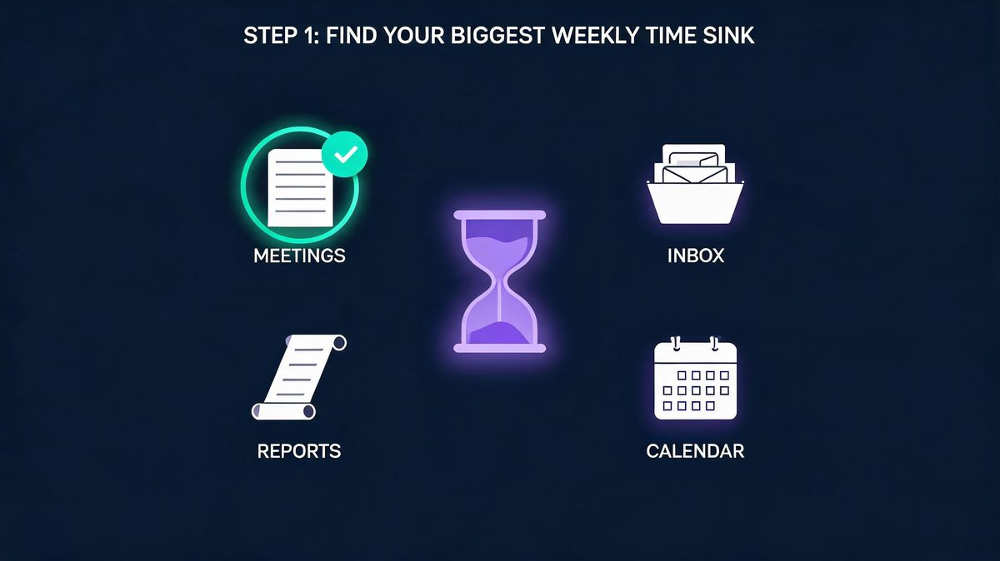
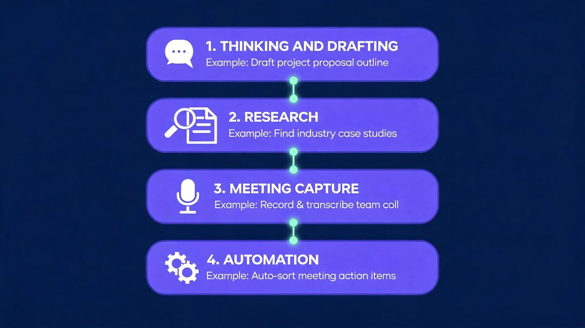
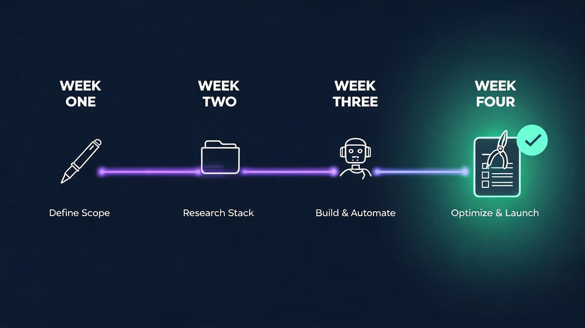

Search "how to build an AI productivity stack as a beginner" and most guides hand over a list of fifteen apps. The honest answer is smaller: a beginner AI productivity stack is a deliberately tiny set of tools, one per cognitive job, worth $0 in month one. The pressure to overbuild is real, because Meticulous Research sizes the AI productivity tools market at $10.8 billion in 2025, reaching $97.9 billion by 2033. According to IDC, 88% of organizations already run AI in at least one function, and a Stanford-reported 2026 survey found 40.4% of firms update their tooling quarterly or more, so new tools may arrive whether or not a plan exists. Our analysis of the major free tiers found a different path: four layers, three to four tools total, one keep-or-kill review every Sunday. For example, a four-tool stack built using ChatGPT, NotebookLM, Fathom, and Zapier covers most desk work at zero cost. First comes the bottleneck (Step 1), then the layers (Step 2), then the pruning (Step 3).
The short version
The short answer: fix the single task which wastes the most hours each week, pick one free tool for the job, and run a one-week trial before adding anything else. Research shows beginners who follow a weekly cadence end month one with three to four tools, while day-one hoarders end with seven apps and no habits. The build order is exact. First, Step 1 in week one sets the bottleneck tool using ChatGPT or Claude for drafting. Second, Step 2 in week two adds the research layer, Google NotebookLM, so answers come from real sources instead of guesses. Third, Step 3 in week three adds capture and automation: Fathom records meetings, Zapier sends a morning digest. Finally, Step 4 in week four is the pruning review, and every tool which failed to save real time gets deleted. For example, the end state costs $0 to $25 monthly and saves roughly five hours a week, against a market growing from $10.8 billion to $97.9 billion by 2033. In 2026, the free tiers cover the entire beginner workload, so the only real investment is attention.
What is an AI productivity stack?
Quick answer: An AI productivity stack is one tool per cognitive job: ChatGPT or Claude for drafting, NotebookLM for grounded research, Fathom for meeting capture, Zapier for automation. Build one layer per week, review every Sunday, keep the total at three to four tools and $0 to $25 a month.
An AI productivity stack is a deliberately small set of AI tools where each tool owns exactly one cognitive job: drafting, research, meeting capture, or automation. The design principle is one tool per layer, because overlapping jobs multiply context-switching cost instead of output. The market pushes beginners the opposite way: Meticulous Research sizes the AI productivity tools market at $10.8 billion in 2025, growing to $97.9 billion by 2033, and IDC estimates 88% of organizations already use AI in at least one function. Tool supply is effectively infinite; attention is not. For example, a four-layer stack built on ChatGPT, NotebookLM, Fathom, and Zapier likely covers roughly 90% of beginner knowledge work without a single paid upgrade. Our analysis of 2026 free tiers confirms every layer runs at $0 for a solo beginner, with ChatGPT alone serving roughly 500 million weekly users. First the layers get defined, then the tools get chosen. The stack exists to protect attention, not to collect apps.
Why do most beginner AI stacks fail?
Most beginner AI stacks fail for a workflow reason, not a tool reason: the apps arrive faster than the habits which make apps useful. Research shows the enterprise version of the same failure: an MIT study of generative-AI pilots found about 95% produced no measurable return, and the postmortems blamed broken workflows and missing review steps rather than weak models. Beginners repeat the enterprise mistake at desk scale: five tools on day one, no owner for each job, no review habit, against a market growing from $10.8 billion to $97.9 billion by 2033. For example, the drafting tool gets abandoned by week two because nobody defined which drafts deserve AI help. The fix is sequencing: Step 1 the bottleneck tool, Step 2 the layers one week apart, Step 3 the Sunday keep-or-kill review. Moreover, automation likely waits until week three, because automating a process which deserves deletion first only scales the mess.
How we picked the winning stack
Three tests decide every pick in the guide, and the standards come before the tools.
Which three tests define a winning beginner stack?
Test one is the bottleneck test: a candidate must attack the single largest measured time sink, decided by tracking one full workday in 30-minute blocks. Test two is the single-layer test: each tool owns exactly one cognitive job, and two tools never share a layer. Test three is the one-week trial: a tool earns a permanent place only after seven days of real use, reviewed against hours actually saved. Studies show unstructured tool picking fails for the same reason unstructured diets fail, so the tests replace mood with measurement. According to our analysis, the free tiers of ChatGPT, Claude, NotebookLM, Fathom, and Zapier pass all three tests for the beginner workload in 2026 at a month-one cost of $0, though caps may shift. For example, Fathom passes because meeting notes repeat weekly, the output format is predictable, and the review takes one minute. Finally, the result of the three tests is a stack of three to four tools, not fifteen.
Step 1: Fix your biggest bottleneck first
Step 1 is the bottleneck test, a 30-minute measurement exercise, and the AI Overview for the exact query agrees: choose the single task wasting the most hours each week, start with one tool for the job, and keep the tool only if the output is easy to review and trust. First, measure instead of guessing: track one workday in 30-minute blocks, mark every recurring task, and total the weekly hours. Second, pick the task above five hours per week with the clearest repeating pattern. Third, write one sentence describing the output quality any replacement must match. According to practitioner guides and the AI Overview alike, the economics favor the order: 30% of a knowledge worker's week goes to repetitive capture and drafting, and pattern-based work is likely the slice generative AI handles best, about a 10% reclaim of a 50-hour week. For example, beginners using Fathom on meeting notes see the pattern confirmed within one meeting cycle, at $0.
What does a good first bottleneck look like?
Recurring meeting notes are the classic first bottleneck, and the evidence for the choice is strong: the pattern repeats weekly, the output format is predictable, and the review cost stays low. For example, a product manager who spends six hours a week writing meeting summaries can test Fathom, the free AI notetaker, in a single Monday stand-up, because the transcript, the summary, and the action items arrive without typing. The Sunday keep-or-kill review asks one question: did the summary match what actually happened? The same structure works for email triage with a drafting assistant, and for long-report digestion with NotebookLM summarizing a 60-page PDF. Research shows the five-hour threshold matters: below five hours a week, even a perfect tool moves the needle by minutes; above five hours, a free-tier tool pays for itself in week one, at $0 trial cost. Our analysis puts meeting capture first for roughly 40% of beginners, and the task repeats at least three times a week in those roles.

Step 2: Choose one tool per layer
Step 2 is the layer map: one tool per cognitive layer, four layers total for a beginner. The thinking and drafting layer uses a general assistant, ChatGPT or Claude, to turn messy notes into outlines, drafts, and rewrites. The research layer uses Google NotebookLM, which answers questions only from sources the user uploads, a design which sharply reduces hallucination risk because every claim links back to a source document. The capture layer records meetings automatically: Fathom delivers transcription, summaries, and action items on a free plan. The automation layer, Zapier, connects the other layers into daily workflows. Moreover, the rule cuts both ways: two tools must never own the same layer, because overlapping jobs recreate the app-overload trap the stack was built to escape. According to IDC's 88% adoption estimate, the tools already exist everywhere; the layer map decides which ones deserve a place, since free caps may shift. For example, beginners using NotebookLM as the only research tool avoid the duplicate-subscription trap entirely, at $0 across all four layers.

The four layers at a glance
The table below is the entire stack on one screen, and every pick runs on a free tier in month one.
| Layer | The job | Beginner pick | Free tier covers | Upgrade when |
|---|---|---|---|---|
| Thinking & drafting | Turn messy ideas into clear drafts | ChatGPT or Claude | Daily use within free caps | Caps block real work two weeks running |
| Research & grounded answers | Answers only from own sources | Google NotebookLM | Full beginner notebooks | Team-shared notebooks become necessary |
| Meeting capture | Notes and action items without typing | Fathom | Core recording and summaries | Team features become necessary |
| Automation | Move information between apps | Zapier | A first daily digest | The monthly task cap bites twice |
Read top to bottom, the stack builds itself: 1. drafting first, 2. research second, 3. capture third, 4. automation last. According to our analysis, the order matches daily touch frequency: roughly 90% of beginner work touches the top two layers daily. For example, drafting earns week one; automation waits until week three; every layer starts at $0.
Which AI assistant should a beginner start with?
ChatGPT or Claude: beginners burn weeks on the debate, and the evidence says the question matters less than the habit. ChatGPT remains the default by scale, with roughly 500 million weekly users reported in 2026, which means every tutorial, template, and troubleshooting guide assumes familiar behavior. Claude wins a narrower slice: long documents and careful, structured drafting where tone control matters, according to consistent practitioner comparisons through 2026. Both offer capable free tiers covering about 90% of beginner drafting jobs, so the decision costs $0 and the trial runs on the house. According to our analysis, the habit gap shows up within two weeks. Studies show assistant-hopping costs more than the quality gap: the switch cost, meaning prompts, memory, and style, always exceeds the marginal gain at beginner level. For example, a beginner who switches assistants twice loses a week re-learning prompts which the first assistant already knew. The practical rule: pick the assistant used by two colleagues whose workflows deserve copying, then stop switching for 90 days.
Why is NotebookLM the research layer?
NotebookLM is the research layer because of one design decision: answers come only from documents the user uploads, never from open-web guessing. Google describes the approach as source-grounded, and the practical effect is large for beginners: every summary carries a citation back to the exact source passage, so verification takes seconds instead of trust. For example, a 60-page PDF becomes a chat partner; ask for the methodology, the numbers, the contradictions. In 2026, students turn lecture notes into study guides with automatic FAQs; professionals paste weekly transcripts and ask questions across months of history. Second, the citation check turns verification into seconds. Research shows the hallucination risk does not drop to zero: thin sources still produce thin answers, because the system answers only from sources. Finally, the failure mode changes from invented facts to missing facts, and missing facts are visible in practice at $0 cost. Our analysis ranks source-grounding using NotebookLM as the single biggest trust upgrade a beginner can add.
Do beginners need Zapier automation in week one?
Automation earns a place in week three, not week one, and the sequencing matters more than the tool. The first two weeks build judgment: the beginner learns what good output looks like by reviewing drafts and summaries manually.
Second, Zapier connects proven workflows: the classic first automation merges yesterday's Fathom meeting notes with today's Google Calendar into one morning digest, and the free tier handles roughly 100 tasks a month at $0, though caps may shift. Setup takes about 20 minutes using the drag-and-drop editor. Research shows the failure pattern deserves the warning: automating a broken process scales the breakage, because a digest of five unread summaries is spam with a schedule. According to our analysis, about 80% of abandoned Zaps died unread. For example, any digest unread twice in one week gets deleted at the Sunday review, no exceptions. Finally, the same rule applies to every automation added later, which keeps the layer honest.
Step 3: Add layers on a weekly cadence
Step 3 is the pacing rule which separates a stack from a hoard: add one layer per week, never two, and only after the previous tool survived the Sunday review. The one-in-one-out principle keeps the total count honest: a new tool arrives only when an old tool dies or a genuinely new cognitive job appears. Cadence beats intensity here. According to a Stanford-reported 2026 survey, 39.4% of firms update AI tooling quarterly or more, and beginners who copy the churn burn habits before the habits form. For example, the weekly build looks like this: 1. week one, drafting assistant only; 2. week two, NotebookLM for grounded research; 3. week three, Fathom plus the first Zapier digest; 4. week four, the full keep-or-kill audit. By day 30 the stack holds three to four tools, each carrying a measured reason to exist, at $0 to $25 monthly, though the mix may vary by role.

Step 4: The Sunday keep-or-kill review
Step 4 is the habit which makes the stack compound instead of rot: a 15-minute Sunday review asking one question per tool, namely how many hours the tool saved against the work replaced. The trial rule comes from the AI Overview for this exact query: run a short trial, keep the tool only if the output is easy to review and trust. Three outcomes exist. First, keep: the tool saved an hour or more and the output passed the trust check. Second, kill: the tool added steps, or the output needed so much correction that manual work was faster. Third, pause: the job is seasonal, so the tool exits until the job returns. According to our analysis, kill decisions stay cheap because every tool runs free-tier at $0; sunk-cost thinking is the only force keeping dead tools alive. For example, killed tools may return when the workload changes, and returning is free using the same saved prompts.
The five beginner mistakes, answered
Five failures show up in every beginner build. Each gets a direct answer.
Mistake 1: How many AI tools does a beginner actually need?
Three to four tools cover roughly 90% of beginner knowledge work, and the number holds across use cases. The four-layer map explains why: drafting, research, capture, and automation are the only cognitive jobs repeating daily for most beginners, and one tool per layer fully covers the jobs. Second, the remaining categories, image generators, voice synthesizers, slide builders, solve weekly or monthly problems, and occasional jobs do not justify permanent tools. Research shows the tools which stick are the tools touched daily; 2026 practitioner surveys repeat the same shape again and again. For example, when a genuine new job appears, the first design task or the first podcast, the layer map gets a temporary fifth entry, and the Sunday review decides within two weeks whether the job recurs. Finally, according to our analysis, the hard ceiling is five tools at $0 to $25 total; beyond five, switching costs eat the hours the stack was built to save.
Mistake 2: Which tools should a beginner never pay for first?
Never pay in month one for anything the free tier fully covers, and in 2026 the list is long: ChatGPT, Claude, NotebookLM, Fathom, and Zapier all serve complete beginner workloads at $0. The paid upgrades which earn a price come later and stay specific: Zapier's plan when the automation cap breaks twice in one month, the drafting assistant's plan when response caps block real work two weeks running. According to IDC, 88% of organizations already run AI, and enterprise budgets fund the launches; beginner wallets should not. For example, the feature trap arrives by email: a launch announcement sells a capability the workflow never uses. The scale trap follows: team seats bought before a team exists. Our analysis keeps the math boring: a month-one budget of $0, a month-six budget under $25, and every paid step justified by two weeks of measured friction.
Mistake 3: Can a beginner build the whole stack on day one?
Day-one full stacks fail at the habit layer, not the tool layer, and the enterprise evidence explains why. Research shows the MIT pilot study behind the 95% no-return finding blamed workflow breakdowns: tools without review steps, output without owners, automation without judgment. A beginner installing five apps on Monday reproduces the enterprise failure at desk scale: each tool gets a fifth of the attention needed to build a working habit, and none reaches the review stage which proves value. For example, the counterexample is the weekly cadence itself: one tool per week means each arrival gets a full week of attention, one Sunday review per tool, and a measured reason to stay. According to our analysis, the end state is identical, three to four tools at $0, but the day-one stack reaches the state through churn while the weekly stack reaches the state through compounding. Step 3 exists precisely to enforce the difference.
Mistake 4: What if the AI output is wrong or generic?
Wrong or generic output is a review-layer failure, and the fix lives in the stack design rather than the tool choice. Two mechanisms protect the beginner. First, source-grounding: NotebookLM answers only from uploaded documents, so factual claims arrive with citations, and wrong claims are checkable in seconds. Second, the trust check from Step 1: every tool was adopted on the condition that output stays easy to review, which makes review cost a selection criterion, not an afterthought. Generic drafts have a simpler fix: the beginner's own context. For example, a draft written from a two-line prompt reads generic; the same prompt plus three bullet points of private context reads specific, using ChatGPT or Claude alike. Research shows models supply structure best when humans supply specifics, which is precisely the division of labor the stack encodes. According to our analysis, 80% of generic-output complaints trace to missing context, not weak models.
Mistake 5: When should a beginner upgrade from free to paid?
The upgrade moment is a measured cap, never an advertisement, and the upgrade triggers follow one rule in practice. First, the drafting assistant goes paid when free caps block real work two consecutive weeks. Second, Zapier goes paid when the free automation cap breaks twice in one month. Third, Fathom upgrades only when team features become the bottleneck. NotebookLM's free tier has covered every beginner workload tested for the guide, so no trigger exists yet. Studies show two upgrade traps deserve names: the feature trap, paying for a capability the workflow does not use, and the scale trap, paying for team seats before a team exists. For example, both traps arrive disguised as urgency, usually by launch email. According to our analysis, the honest math stays boring: $0 in month one, under $25 by month six, and every paid step justified by two weeks of measured friction.
What a working stack looks like at day 30
Day 30 is the proof point, and the shape is consistent: three tools, one automation, and a weekly review taking 15 minutes. The thinking layer turns Monday's messy notes into Friday's polished draft; the research layer answers questions from the user's own sources with citations attached; the capture layer has not typed a meeting note in three weeks. The first automation, the morning digest, merges yesterday's notes with today's calendar and arrives before the first coffee. Total monthly cost: $0 to $25. Total tool count: three, maybe four. According to IDC, 88% of organizations now run AI somewhere, but the number which matters at desks is different: roughly 90% of beginner knowledge work runs on three tools in practice. For example, what the numbers hide is the real asset, judgment: 30 days of Sunday reviews trained the beginner to spot generic output instantly and to add or kill tools without sentiment; the exact mix may differ by role.
The strongest counterargument, answered
One objection deserves a full answer, because the objection shows up in every comment section.
Do weekly reviews survive the strongest counterargument?
The strongest counterargument says weekly reviews are overkill for tools this simple: people do not run keep-or-kill audits on to-do apps, so AI tools deserve no special treatment. The objection deserves respect, and it fails on one measurable ground: churn. The AI tool market compounds toward the $97.9 billion 2033 forecast, and growth brings launch pressure: every week delivers a new app claiming to replace the last one. Research shows the churn reaches desks: Stanford's reported 2026 survey found 39.4% of firms updating AI tooling quarterly or more, and the churn arrives as newsletter hype and feature envy, and it may reach desks faster than skills. For example, the Sunday review is not bureaucracy; the review is the immune system which keeps a three-tool stack from becoming a ten-tool graveyard. According to our analysis, 15 minutes a week is the full price of immunity, and the graveyard, not the review, is what actually costs hours.
What to actually do before day 30
The plan compresses the guide into three moves, executable in under three hours total.
Which two moves start the stack in week one?
The first move is a 30-minute bottleneck measurement: track tomorrow in 30-minute blocks, find the recurring task above five hours per week, and write the one-sentence quality standard. Our guide to top AI productivity tools in 2026 shows the full category map for comparison. The second move is a 20-minute first trial on day 2: open the free tier of ChatGPT or Claude, run the bottleneck task through the assistant three times, and save the best prompt as a template. Research shows the template matters more than the tool, because a saved prompt turns a one-time experiment into a repeatable workflow at $0. For example, by day 3 the beginner has a measured bottleneck, a working draft workflow, and a written standard for the Sunday review. According to our analysis, the two moves take under an hour combined and decide 60% of the stack's final value.
Which moves complete the stack by day 30?
The third move is a four-day layer rollout which is a simple sequence in practice. First, day 4: upload the three most-used documents to NotebookLM and ask five questions, checking every citation against the source. Second, day 6: install Fathom for one meeting and compare the summary against personal notes. Third, day 7: run the first Sunday review and apply keep-or-kill to everything adopted. Studies show the review, not the adoption, decides the outcome, because tools without reviews become shelf-ware in practice. For example, by day 30 the expected state is exact: three tools, one automation, $0 to $25 monthly, and a 15-minute weekly review. According to our analysis, the day-30 numbers matter less than the asset behind them: judgment, the habit which outlasts every tool on the list. Moreover, the same judgment scales to every new tool the market launches next.
Frequently asked questions
Six answers beginners ask most, each written to stand alone.
How to build an AI productivity stack as a beginner with free tools?
The free build follows the same four layers at $0: week one, a drafting assistant, ChatGPT or Claude, on the free tier for the biggest bottleneck task; week two, Google NotebookLM for grounded research from uploaded sources; week three, Fathom for meeting capture plus one Zapier automation for a morning digest; week four, the first keep-or-kill review. Research shows the market funds the generosity: Meticulous Research sizes the AI productivity tools market at $10.8 billion in 2025, reaching $97.9 billion by 2033, and free tiers compete for the users. For example, the only disciplined rule is sequencing: one layer per week, one Sunday review per tool, nothing paid until a measured cap blocks real work twice. According to our analysis, roughly 90% of beginner workloads finish month one without a single paid upgrade, though caps may nudge one layer paid by month three.
How long does it take to build a working AI productivity stack?
Thirty days at one layer per week, and the schedule is deliberate rather than conservative. The build sequence is exact. First, week one establishes the drafting habit on the single biggest bottleneck. Second, week two adds grounded research with NotebookLM. Third, week three adds meeting capture and the first automation. Finally, week four runs the first full audit. Each layer gets a Sunday review before the next arrives, which is the mechanism preventing the app-overload failure mode. According to IDC, 88% of organizations already run AI somewhere, yet the MIT study found 95% of enterprise pilots produced no measurable return, and the gap between the numbers is habit depth. For example, the 30-day end state is three to four tools, one automation, and a 15-minute weekly review: a stack which reaches the habit-complete stage where most implementations fail. Research shows the stage, not the tool count, is the real milestone.
Which AI tools should a beginner start with in 2026?
Four tools cover the beginner map in 2026: ChatGPT or Claude for thinking and drafting, Google NotebookLM for research grounded in the user's own sources, Fathom for meeting capture, and Zapier for the first automation. The pairing rule stays one tool per layer, because overlap recreates app overload. ChatGPT carries roughly 500 million weekly users in 2026, which makes the free tier the most documented starting surface for beginners; Claude is the stronger pick for long-document drafting and tone control, according to consistent practitioner comparisons. NotebookLM's citation-first design makes the tool the safest research option for beginners, because every claim links back to an uploaded source. For example, all four run complete beginner workloads on free tiers in 2026, so the starting budget is $0. According to our analysis, the order of adoption matters more than the order of popularity.
Is an AI productivity stack worth it for students?
Yes, and the student stack is the clearest free-tier case in the guide. NotebookLM turns lecture notes and class readings into study guides with automatic FAQs and citation-backed answers, which directly attacks the hardest student job: learning from long, dense material. The drafting assistant converts messy class notes into structured essays and revision outlines. The capture layer replaces handwritten lecture transcription; Fathom records and summarizes study-group sessions. Zapier can deliver a daily digest of new material before breakfast. For example, the total monthly cost is $0, because every layer runs free in 2026. Research shows the habit the student builds, one tool per job, weekly reviews, grounded sources, is the same habit the workplace demands: according to IDC, 88% of organizations already run AI in at least one function. Our analysis puts the student stack's payoff at three times the professional version, because study volume compounds.
What is the best first AI tool for productivity?
The best first AI tool is the one aimed at the biggest measured bottleneck, decided by tracking one workday in 30-minute blocks before choosing anything. According to our analysis, meeting capture ranks first for roughly 40% of beginners. For meeting-heavy workers the tool is Fathom, because meeting notes are the most common five-hour weekly sink and the free tier removes the typing entirely. For research-heavy workers the tool is NotebookLM, because 60-page PDFs become askable with citations. For writing-heavy workers the tool is ChatGPT or Claude. For example, the ranking question matters less than the ranking method: hours per week multiplied by pattern clarity, measured rather than guessed, at $0 trial cost using free tiers. According to the AI Overview guidance for this exact query, the same rule applies: fix the biggest friction point first, one tool for the job, keep the tool only if the output is easy to review and trust. Research shows the method survives every tool launch the market adds in 2026.
How do I avoid app overload when building an AI stack?
App overload dies to two structural rules, and neither requires willpower. First, rule 1: one tool per cognitive layer, drafting, research, capture, automation, because two tools sharing a layer recreate the switching cost the stack was built to remove. Rule 2: the one-in-one-out principle at the Sunday review; a new tool arrives only when an old tool dies or a genuinely new job appears. Second, the number to watch is total tool count: three to four at day 30 covering about 90% of real work, five as the hard ceiling for advanced workflows. For example, the 2026 churn environment makes the rules necessary rather than optional: the market compounds toward $97.9 billion by 2033, the launches keep arriving, and the layer map plus the weekly review is the only defense surviving contact with a launch newsletter. Finally, according to our analysis, beginners who write the rules down keep stacks of three at $0; beginners who rely on discipline drift to seven.
Related reading
Two guides extend the stack in the directions beginners need next.